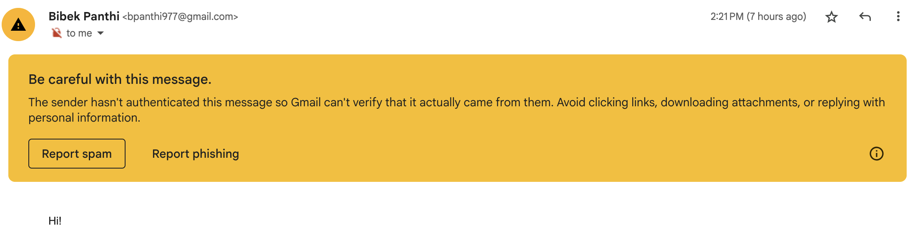

Email Security
Table of Contents
Today, I was exploring the mail feature inside Emacs and while trying stuff out I sent an email from one of my email addresses to another. Surprisingly it worked. Surprising because I hadn't given Emacs any of my passwords or credentials! So how did it work? I also tried the same using the sendmail program from my local machine and also from a server. In both cases, the email was again received. And in all cases, I hadn't provided the password!!!
We use email everyday for personal communication, website logins, OTPs and also to reset passwords for all kinds of websites and services. But are emails in themselves secure? Can I send you an email pretending to be someone else? Would you notice? Probably yes, but maybe not.
Email are sent using SMTP (Simple Mail Transfer Protocol). SMTP transfers email messages using a plain text format which has some headers at the beginning and an text encoded email body after the headers.
SMTP doesn't specify any method to authenticate the sender of the email. So if your are using plain old SMTP, then I (or anyone) can send you an email with a `From: ceo@google.com` header field and you wouldn't know if it is really from google or not. This is bad. So, obviously there have been some measures devised to authenticate the sender of the email. Two main methods are SPF (Sender Policy Framework) and DKIM (DomainKeys Identified Mail). These methods make email secure. Kind of.
1. SPF (Sender Policy Framework)
As per Sender Policy Framework, the recipient checks the IP address of sender with a set of allowed IP addresses for the sender's domain. i.e. If the server receives an email from 1.2.3.4 from abcd@gmail.com1 then, it will check whether or not the IP 1.2.3.4 is an allowed IP address for the domain gmail.com. The list of such allowed IPs is provided using TXT records of DNS 2.
If we check the TXT record of gmail.com then it has a record with v=spf1 that redirects to _spf.google.com.
dig +short -t txt gmail.com
"v=spf1 redirect=_spf.google.com"
The TXT record for SPF in _spf.google.com further asks to include the records from _netblocks.google.com which finally lists some IP subnet that are whitelisted for use by gmail.com.
dig +short -t txt _spf.google.com
"v=spf1 include:_netblocks.google.com include:_netblocks2.google.com include:_netblocks3.google.com ~all"
dig +short -t txt _netblocks.google.com
"v=spf1 ip4:35.190.247.0/24 ip4:64.233.160.0/19 ... ip4:216.239.32.0/19 ~all"
The ~all indicates that the mail can be accepted from anyone (any IP) but it should be marked as unsafe or spam if the IP doesn't fall within the subnets specified. Alternatively, -all indicates that recipient mail-server should accept mail from abcd@xyz.com only when the IP matches. And +all would state that mail-server can accept mail from any server.
Why does gmail.com use ~all instead of -all? I don't know.
Anyways, SPF is one method how emails are verified. Next is DKIM.
2. DKIM (DomainKeys Identified Mail)
In DKIM system, emails are validated using Digital Signatures (i.e. Public key and Private key). The sender computes digital signature of the email using its private key and sends the signature along with the email inside the headers. The recipient can check that signature using the public key and can be sure that the email hasn't been tampered with. To find the public key of the sender, DKIM uses same techniques as SPF for IP addresses: DNS records 3. Let's take an example. gmail.com might send an email with a following header 4:
DKIM-Signature: v=1;
a=rsa-sha256;
c=relaxed/relaxed;
d=gmail.com;
s=20230601;
h=content-transfer-encoding:subject:from:to:date:cc:reply-to;
bh=nDb91RUuDSdLXRVz6gTMVWYOt/Q8OiaPfAUgvs5A9lQ=;
b=CiFCAne44lKRb+ … fBjknriXDtfzvMSqIhb55SgamIxM7oXhG/Q==
This header has information on how to check the digital signature in the h, bh and b fields. I'll about these shortly. But first lets find the public key of the domain gmail.com. The public key is in the TXT record of <selector>._domainkey.<domain>. The selector value is sent along with the email as the s field. Here the selector is given by s=20230601. So querying the DNS record, we get the public key:
dig +short -t txt 20230601._domainkey.gmail.com
"v=DKIM1; k=rsa; p=MIIBIjANBgkqhk ... niwXwIDAQAB"
The p field is the public key for domain of gmail.com. Now that we have the public key, let's see how the digital signature is created and checked.
The basic idea of Digital Signature is this: Sender has private key and recipient has corresponding public key. Digital signature of a string is just the hash of the string encrypted with the private key. And public key only correctly decrypts the string encrypted with its corresponding private key. So, the client can itself compute the hash of the string and compare that hash with the decrypted hash. This way the client knows for sure that the sender has the private key.
First of all the sender computes the hash of the email body and includes that hash value in the bh field. Now it concatenates that hash value with some other fields of the email (like subject, from, to … specified in the h field) and computes the digital signature of that string. This digital signature is sent in the b field. Now the recipient can compute the hash itself and check that against the digital signature. If this checks out, then recipient can be certain that the fields of the email and the body of email haven't been modified.
So, using SPF and DKIM now we can know that the sender is valid and the data inside the email hasn't been tampered by anyone. Now, a final piece of this system is DMARC.
3. DMARC (Domain-based Message Authentication Reporting and Conformance)
DMARC tells the recipient what to do after checking the SPF and DKIM records. DMARC is specified using a TXT record in _dmarc.domain. For example:
dig +short -t txt _dmarc.gmail.com
v=DMARC1; p=none; sp=quarantine; rua=mailto:mailauth-reports@google.com
The DMARC record for gmail.com says that the recipient doesn't need to quarantine or reject the emails that fail DKIM and SPF checks but they should report those errors back to mailauth-reports@google.com.
p=none[Domain Policy = none] means no special treatment for emails from domain.sp=quarantine[Subdomain Policy = quarantine] means mark email as suspicious if the DKIM and SPF don't check out when receiving email from subdomains of gmail.com.
Why does gmail.com have such relaxed policy instead of having p=quarantine or p=reject? I don't know. But let's check if we can exploit this to send an email as someone else.
4. Exploit Attempt
If you have the sendmail program installed, you can create a file (say email.txt) as follows:
To: your.friend@domain.com
From: his.boss@gmail.com
Subject: Salary hike!
Hey! <Your Friend Name>
In appreciation of your great work, I have decided to double your salary.
With regards,
<Boss Name>
And try a prank with your friend:
sendmail your.friend@domain.com < email.txt
sendmail program talks to mail server at domain.com using SMTP. And sends the email as coming from his.boss@gmail.com. The receiving mail server would now check the IP address using SPF, which will obviously fail. And as for DKIM, we didn't ask sendmail to include digital signatures, so that will fail too.
But the email might just go in the inbox of your friend. For the first few time I tried sending email from one of my accounts to my other accounts, it went. After a few emails, it started going to spam folder and now such emails don't go. This might be due to some extra tricks gmail does.
5. Is this scary? What can you do?
What if you receive such email? Is gmail.com reckless in using DMARC policy of p=none? outlook.com also has the same policy. There must be some reason for these behaviors, which I don't know yet.
In any case, don't worry much 5, although Gmail allows such emails, it shows them as probable spam in its web interface. So, if you use the web interface (i.e. gmail.com website) for your emails, you'll notice such unverified emails right away.

Figure 1: Email marked spam
But when I was tried this, I had used Thunderbird to view the email. And it provided no indication that the email was unverified. Here Thunderbird could have done something better.
It is the job of recipient mail server to check SPF and DKIM. And after it does that, it adds an 'Authentication-Results' header to the email headers specifying if the checks were successful or not. It would be better if Thunderbird showed those results by default. Right now, I have installed an add-on called DKIM Verifier and turned on the 'Read Authentication-Results header' option in its settings. Now it shows unverified emails in red color. I am not an expert in these matters, but if you use Thunderbird, you should do so too.
6. Conclusion
When you see something interesting, dig deeper and write a blog about it.
Footnotes:
Actually SPF is checked for the domain in the 'Return-Path' header not the 'From' header. And if the domain in Return-Path and From are different then the email fails a DMARC test called SPF Alignment.
For more details see https://www.cloudflare.com/learning/dns/dns-records/dns-spf-record/
For more details see https://www.cloudflare.com/learning/dns/dns-records/dns-dkim-record/
I have used ellipsis (…) in output of commands and other places in the document to avoid long random looking texts.
As with most technology, time and again people keep on finding new attack techniques. SPF and DKIM can't protect you from buggy code: https://media.ccc.de/v/37c3-11782-smtp_smuggling_spoofing_e-mails_worldwide